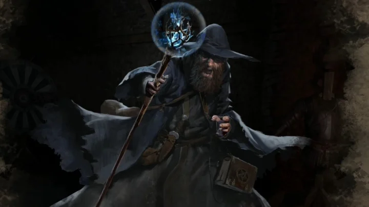
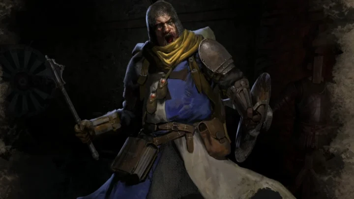
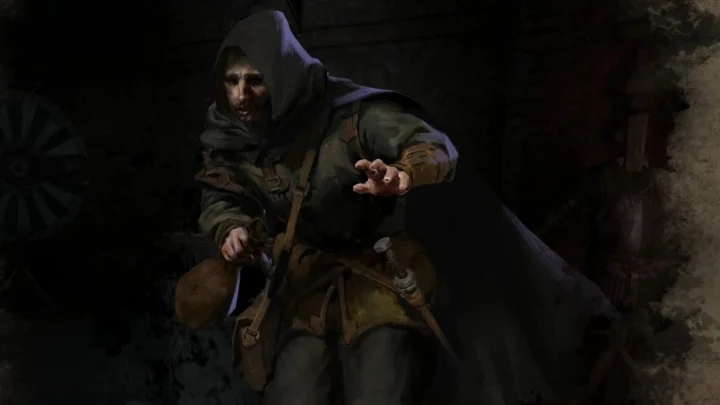
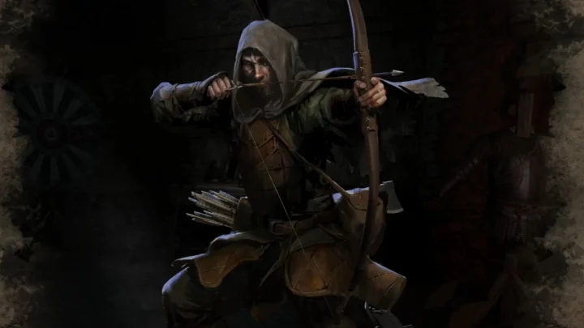
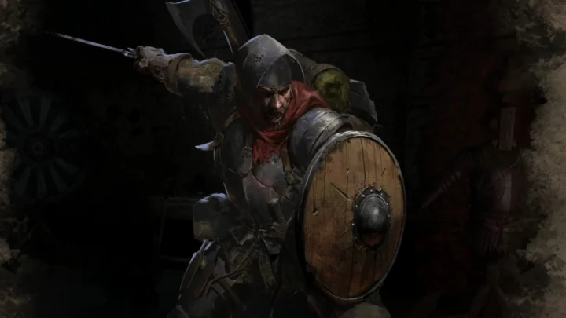
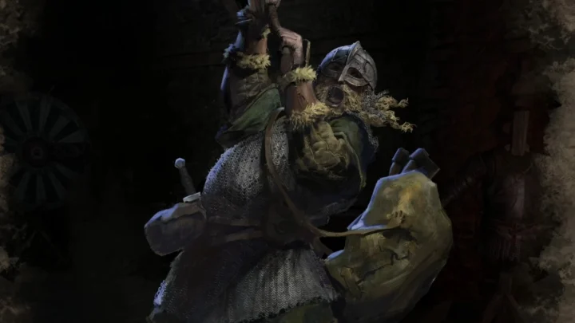

News
Playtest #2
The second Dark and Darker alpha playtest will start on October 28th and run until November 1st. Any players returning from the first playtest will have immediate access whilst new players will have to join the playtest. Once you have joined the playtest the game is available for download on Steam and free to play for the duration of the playtests.
Stouty 1v3
Dark and Darker player Stouty shows off his skills wiping out full teams by himself. As a top ranked melee slasher player he has no problems fighting outnumbered. With good use of shield potions and positioning he effortlessly goes head to head with rouges, clerics, barbarians and anything else that stands in his way.
New Map
Currently there is only one map in the game with levels 2 and 3 implemented. Ironmace has announced that level 1 will be available to play during the next playtest. Level 1 will have a max player capacity above 30 with many oppurtunities for escape portals. The mobs in this level will be easier to kill at the trade off of lower quality loot than the current level offering. This will be a welcomed improvement as many players have expressed their grief at the diffuculty of level 2.
Classes
Wizard
Cleric
Rogue
Ranger
Fighter
Barbarian
Items
| Item | Damage | Speed | Value |
|---|---|---|---|
| Mace | 19 | -25 | 3 |
| Morning Star | 24 | -25 | 10 |
| Falchion | 21 | -25 | 4 |
| Rhondel Dagger | 15 | -10 | 3 |
| Maul | 35 | -55 | 14 |
| Wizard Staff | 20 | -25 | 2 |
| Crossbow | 50 | -55 | 16 |
| Castillion | 17 | -20 | 7 |
| Bow | 40 | -55 | 9 |
| Spear | 38 | -40 | 11 |